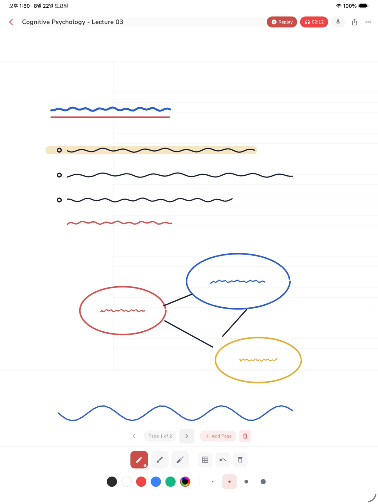
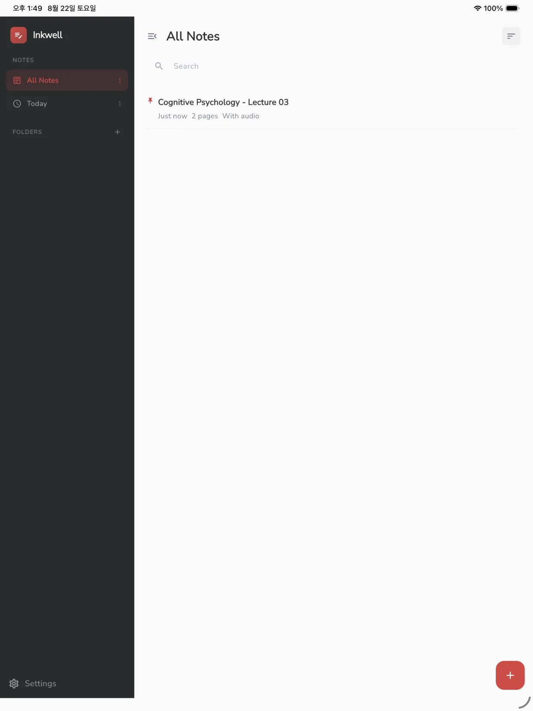

Write naturally
Use Apple Pencil, multiple pages, familiar pen tools, and paper templates.
Built for iPad and Apple Pencil
Inkwell keeps every handwritten stroke connected to the audio around it. Tap your notes and hear exactly what was happening then.

How it works
Use Apple Pencil, multiple pages, familiar pen tools, and paper templates.
Audio and strokes share a timeline, including pauses and page changes.
Tap a handwritten stroke to continue listening from that moment.
One timeline
Move through a long lecture without losing the relationship between what you heard and what you wrote.
Share the work
Send selected pages as a PDF, or turn the writing process into a real MP4 time-lapse that plays anywhere.

Clear by design
Inkwell stores notes on your device and clearly labels what this release can do. It does not claim cloud sync, handwriting recognition, or PDF annotation.
Support
No. Inkwell is intentionally designed for iPad and the larger Apple Pencil canvas.
Not in the current version. You can export one or multiple note pages as PDF.
No. Pro is a one-time in-app purchase. The App Store shows the local price for your region.
Email hiyeong.noh@gmail.com. Include your Inkwell version and iPadOS version so we can help faster.